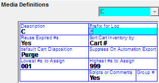

Media Definitions
If you are using Cart Numbers, you must define the Media Definitions.

- Description – Internal character
- Prefix for Log – Character(s) that precede the cart number on the log and exports
- Reuse Expired #’s – Determines whether the numbers can be reused.
- If Yes, the cart numbers will assign sequential
- If No, the cart number must be entered on the Inventory screen at the time of entering the new inventory. Duplicate inventory numbers cannot be entered for a single advertiser (but the same inventory number could be used by different advertisers).
- This must be set to Yes to enable the ISCI inventory import
- Sort Cart Inventory by – Last Used or Cart #. This determines how the cart listing will
- be displayed in the Copy Inventory Screen
- If Last Used, you will see the last cart assigned at the top of your inventory screen
- If Cart #, you will see your carts in sequential order
- Default Cart/Tape Disposition is used when the Purge Button is selected
- Save – By default, expired carts will appear in the “To Be Saved” section of the Purge screen
- Purge – By default, expired carts will appear in the “To Be Purged” section of the Purge screen
- Ask After Expired – By default, expired carts will appear in the “To Be Saved” section of the Purge screen
- Suppress On Automation Export- This will either include or exclude the Cart number from being sent on the automation export
- Lowest #’s to Assign & Highest #’s to Assign - Define the number span that you will be using. The lowest and highest numbers must have the same number of digits, so preceding zeros should be used as in the example. Up to five digits are allowed. Note that these values cannot be entered if the “reuse expired #s” setting is set to No.
- Scripts or Comments - Yes will allow you to enter Copy Script on the Copy Inventory Screen
- Group # - Not used
If using Wegener iPump, there are additional fields that must be filled in.
- Prefix: This two character code setting is added to the start of the Cart #
- Example Layout: SP7965.MP3
- Suffix: This two character code setting is added to the end of the Cart #
- Example Layout: SP7965.MP3
- Event Type: This is two character code is added in front of the Network ID
- PL (Play List): Is the typical Media Code Event Type used with iPump
- NC (Network Cover): There are times when the vehicle spot ‘event type’ should not default to PL. For example, a station in Denver airs network spots, but will not air the live feed (from Scott Automation System), instead the network commercials will be retrieved from the iPump folder. The spots for this vehicle are identified with the Media Code Override NC
- Example Layout: PLA1120913TH0611
- Network ID: This two character code follows the Event Type Code
- Example Layout: PLA1120913TH0611
- Name Space: This is a 60 Characters folder location name. Note: Address should end with a forward slash.